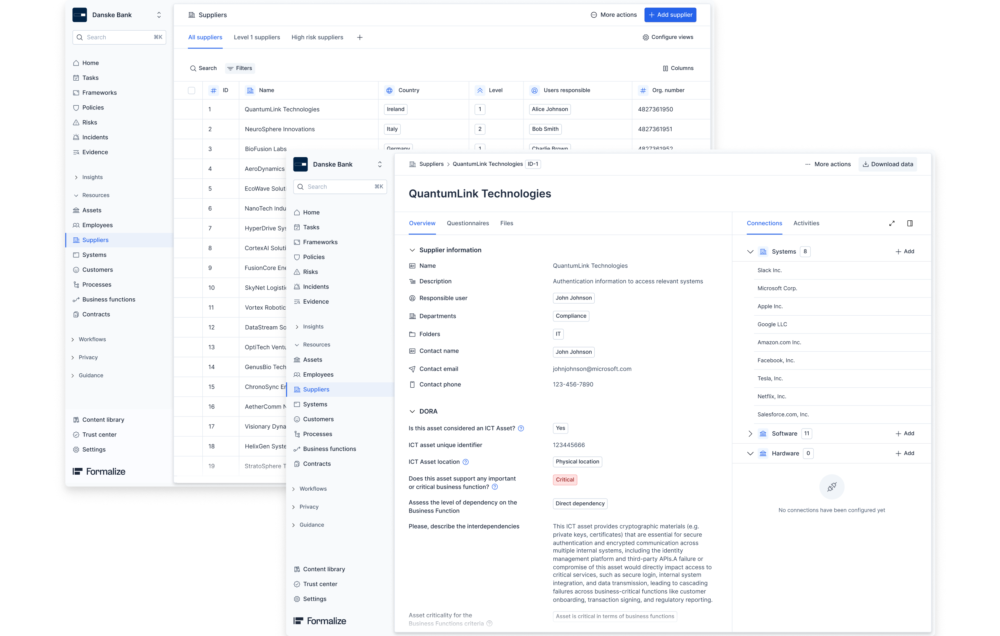
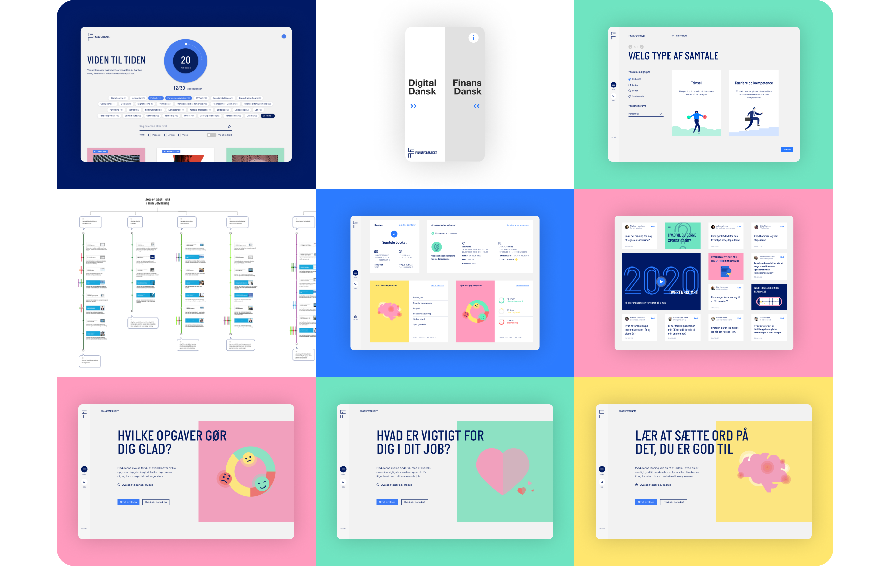

Selected work
15 years · 15+ clients · 8+ industriesFormalize
Building the design function from zero at a hyper-growth compliance startup.
Joined as the first design leader on a platform still shaped largely by engineering priorities. Reoriented the product around user journeys, information architecture, and ease of use — shifting from developer-led to genuinely UX-led thinking. Hired a team of four, built the design system from scratch, and now own the full product experience end to end.

Maersk
End-to-end supply chain platform — 20+ product teams, 260 engineers.
Each designer was embedded in a product team alongside a Product Owner, Tech Lead, and developers — responsible for their own area of the platform. I scaled the team from 6 to 12, introduced cross-team critique and shared design principles, and championed a project called Grand Central Station: a unified starting point built around user journeys, giving operators a clear overview of their tasks and a direct path to where they needed to go.

Finansforbundet
8 new digital products from scratch for Denmark's leading financial union.
A 50,000-member financial union with a 3-year innovation budget and no product capability. I led the full digital transformation — building 8 new digital products from scratch, embedding design thinking into a political organisation, and shifting Finansforbundet from output-focused delivery to a human-centred, insight-driven product culture.

Matas
1.3M members. 4.6 App Store rating. Denmark's leading loyalty app.
Club Matas had lost its edge — declining engagement, outdated mechanics, no clear product direction. I led the full redesign of the app and loyalty experience, shifting from transactional to relationship-led design. The result: Denmark's leading loyalty app with 1.3M members and a 4.6 App Store rating.